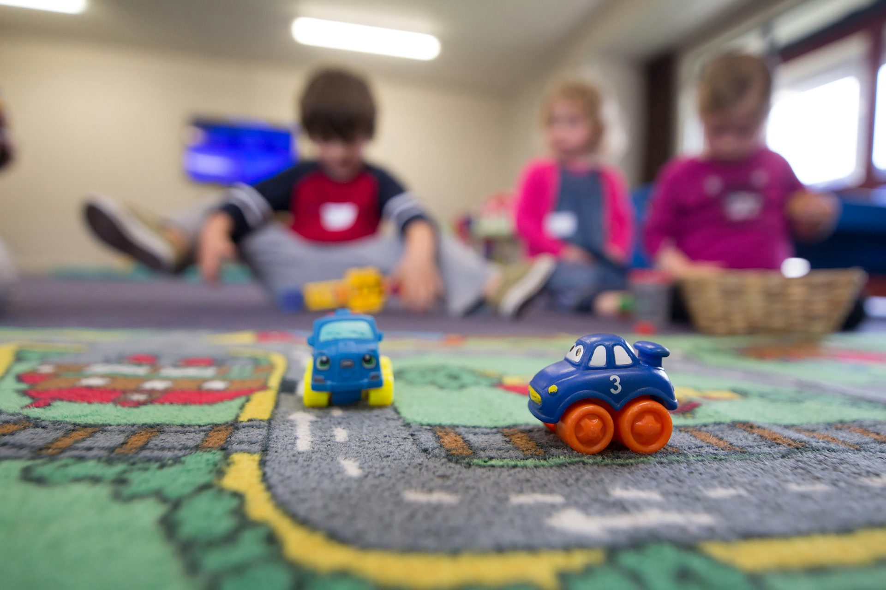
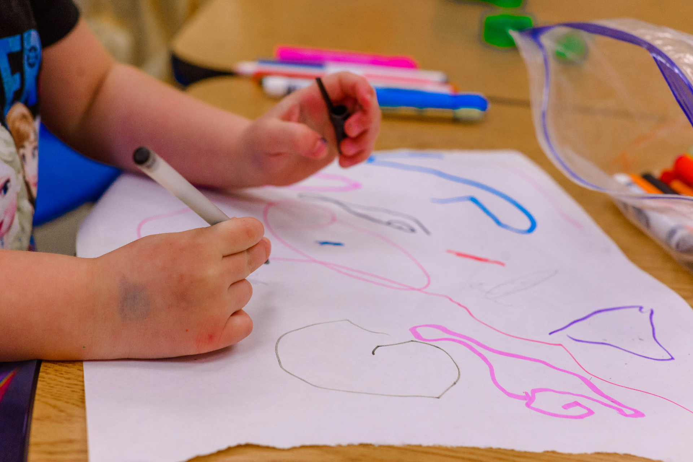
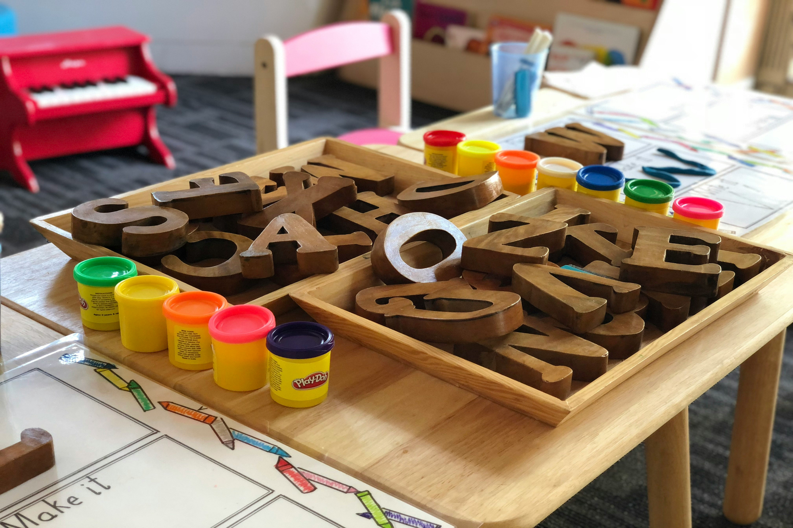
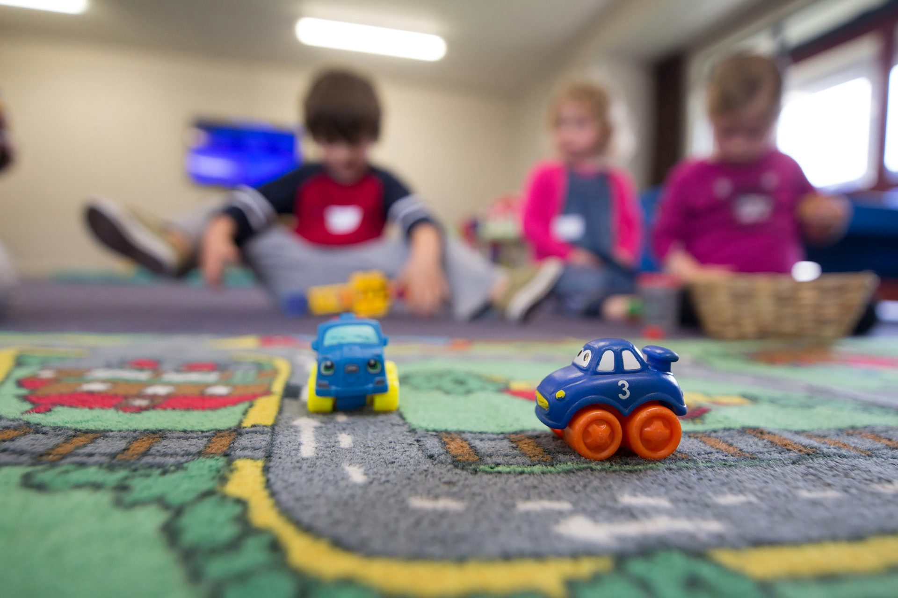
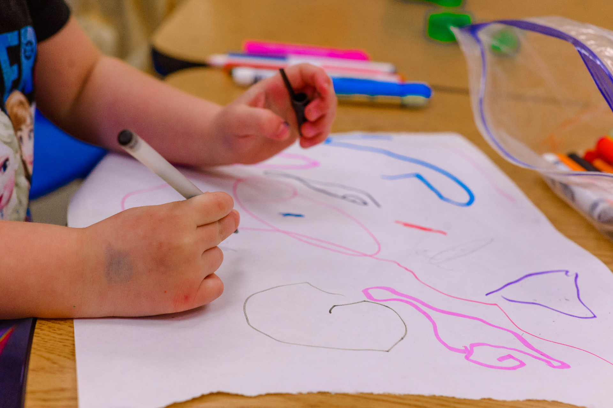
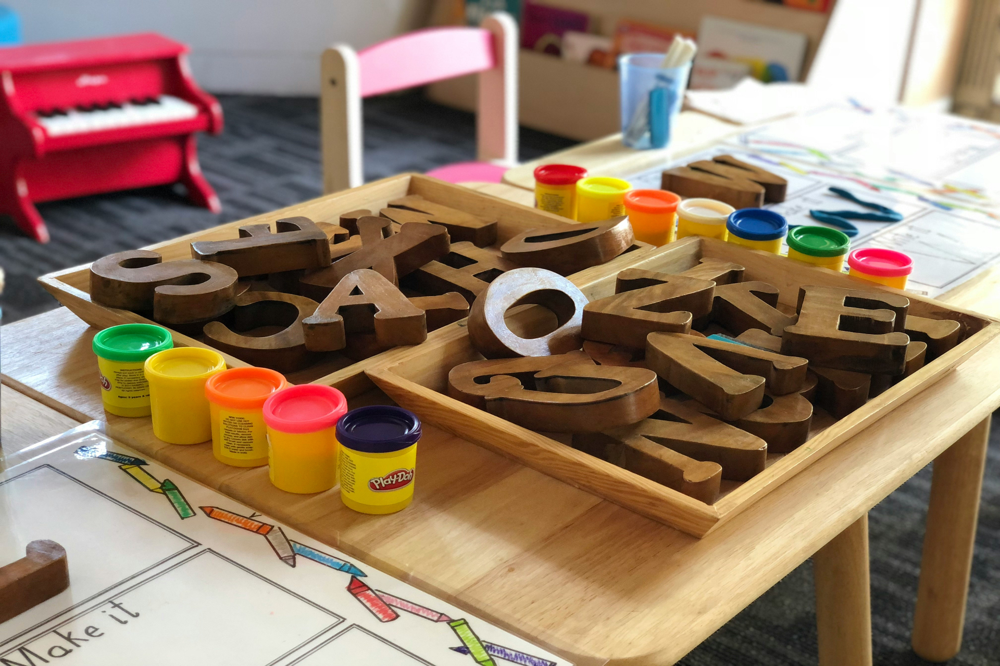

Jardín de Infantes
Desde el Jardín de Infantes, la institución escolar tiene la responsabilidad de crear para los niños oportunidades para aprender, pues enseñar es generar condiciones para que otro aprenda, tarea primordial de los docentes. El vínculo pedagógico escolar se inicia con la presencia de un adulto capaz de transmitir una experiencia cultural, interviniendo entre las posibilidades reales y potenciales del niño, reconociéndolo como sujeto activo y capaz de recibir un legado.
 




